從金石學、印石材料到台灣印社與名家，用大白話講透這門千年手藝
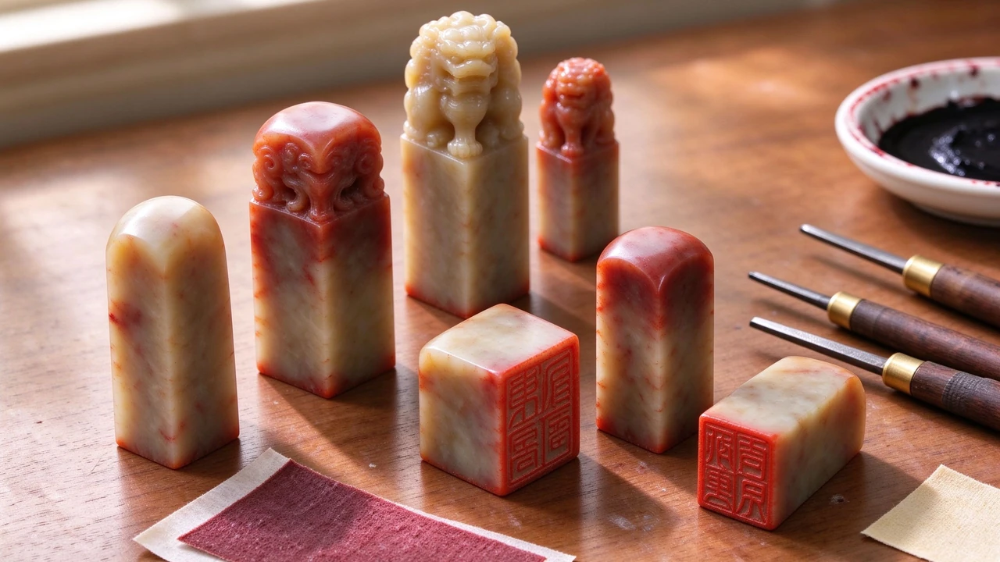
從英文簽名印到佛語長句、從巴林石到芙蓉石、從兩字閒章到肖形吉語——昀林老師 48 方作品一次看完，每方都附原石與鈐拓。
我們花半天走完整個展場，把最值得停步的三件璽印、兩個展場細節、一條私房動線整理給你。
1929 年創立的澹廬書會，是台灣最早的民間書法社團。為什麼是它，而不是別人，撐過了時代？
從練習石到田黃，從刻刀到印泥，牯嶺街一條街把篆刻人的家當都備齊了。
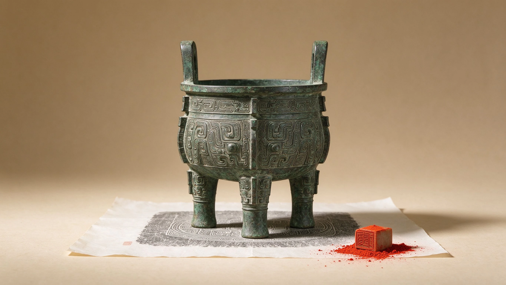
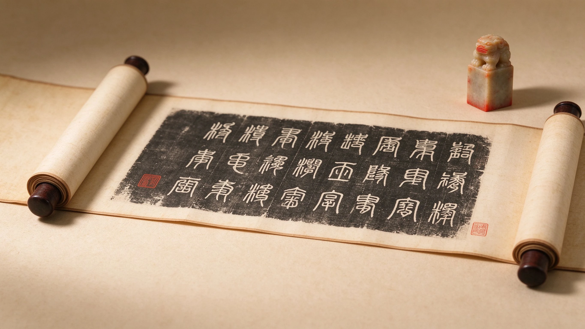
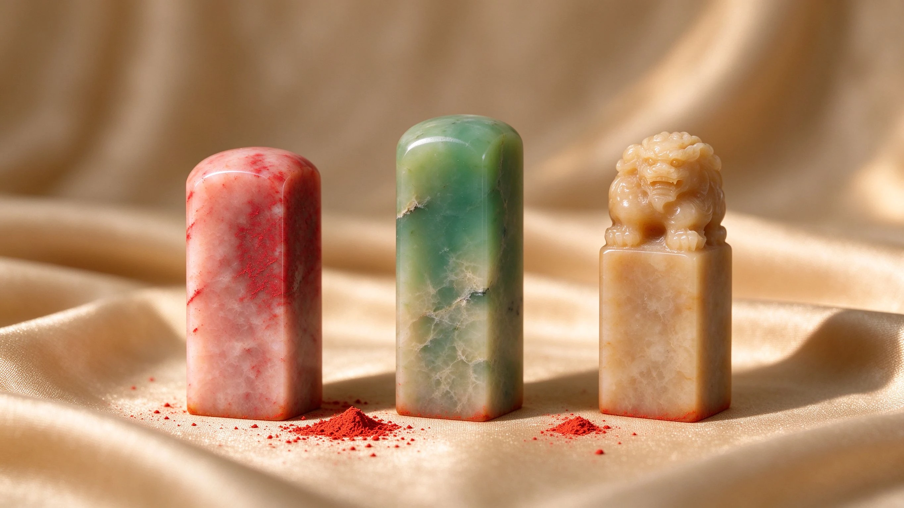
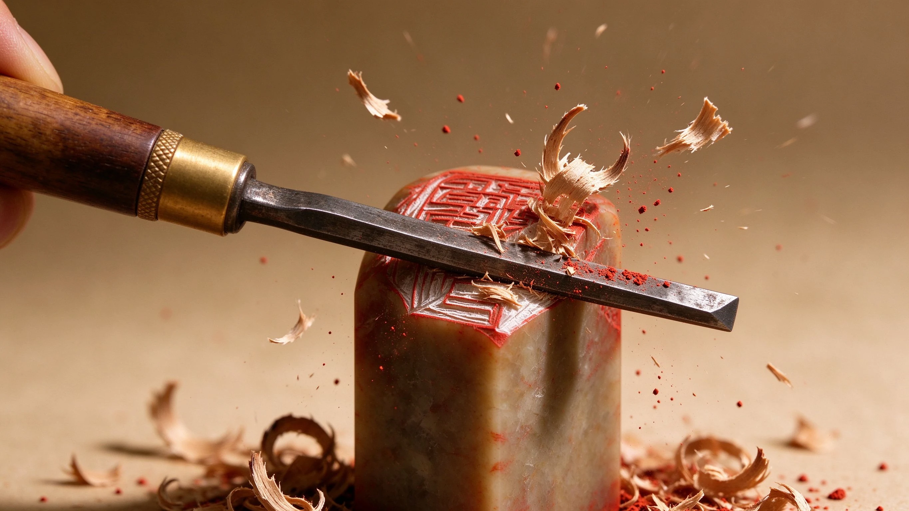
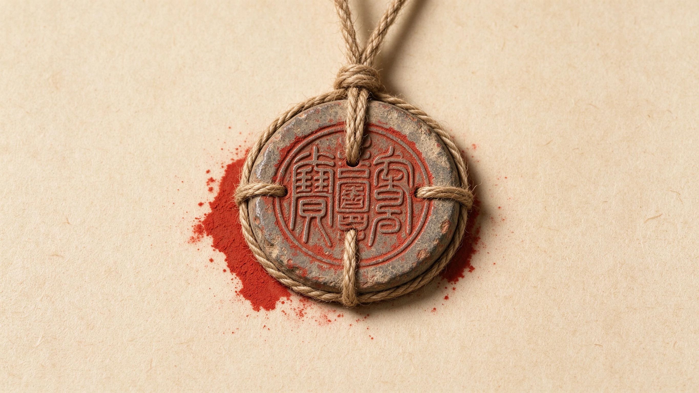
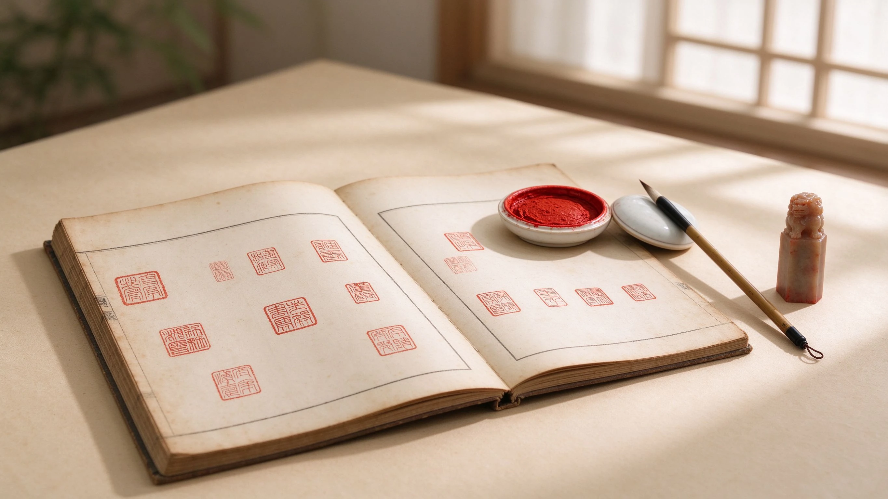
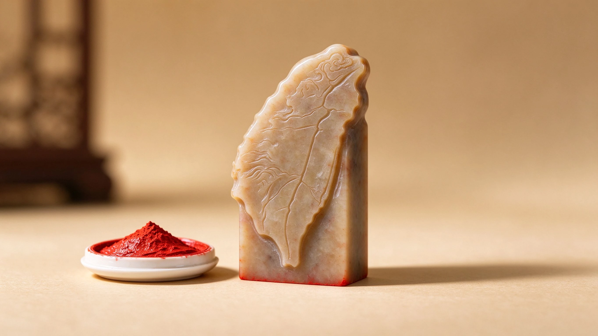
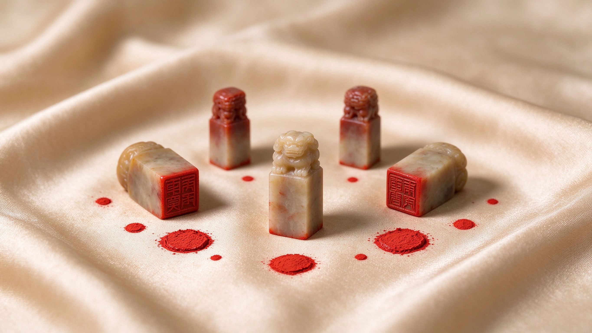
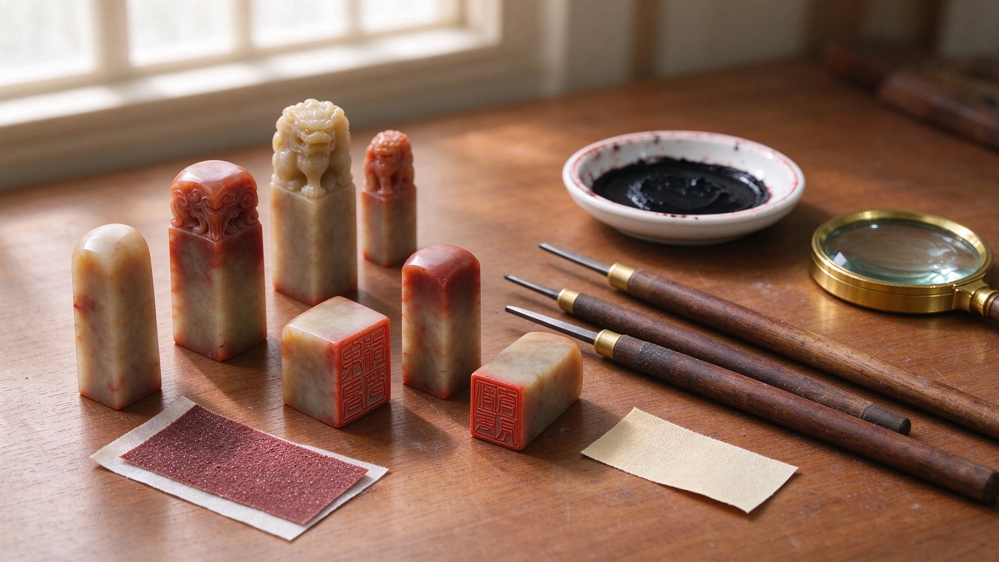
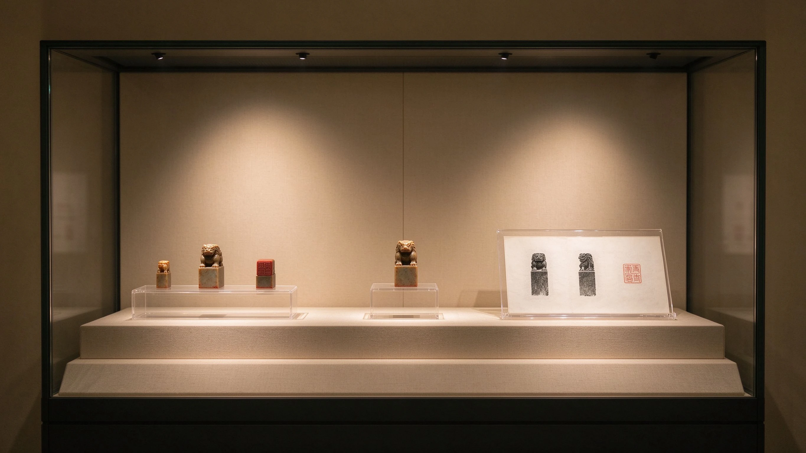